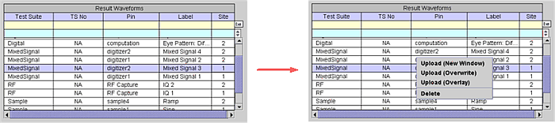
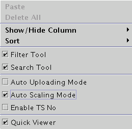

Result Waveforms Shortcut Menus
If you click in a row of the Waveform Navigator Tool (WNT) table, the row is highlighted in blue. In this state, clicking the right mouse button accesses the Shortcut Menu shown below. The contents of the Shortcut Menu are changed based on the context. Their functionalities are the same as the corresponding menu items of the Menu Bar or Tool Bars.

Upload (New Window) - selected waveform is placed in a new selected graph table in the WNT and the waveform is displayed in a new Data Display Panel of the Waveform Graphs Tool (WGT).
Upload (Overwrite) - selected waveform is placed in a new selected graph table in the WNT, the waveform is displayed in the selected (active) Data Display Panel of the WGT, and any previous waveforms will be cleared.
Upload (Overlay) - selected waveform is placed in a new selected graph table in the WNT, the waveform is displayed in the selected (active) Data Display Panel of the WGT, and any previous waveforms will not be cleared.
Delete - selected waveform in the WNT is deleted.
If a waveform is not selected in the WNT and you click the right mouse button, the following shortcut menu appears.

Paste - paste a waveform into the result waveforms table and/or a selected graph table that was copied from a selected graph table (you will be prompted if the waveform already exists in the table)
Delete All - deletes all the waveforms listed in the Result Waveforms table
Show/Hide Columns - collapse and expand any column of the table
Sort - Sort Rows of table by test suite name, test suite number, pin name, label, or site
Filter Tool - view only those waveforms corresponding to the filter criteria by inputting a string in the filter row under the table heading of choice, then clicking the Exe button on the right side of the filter tool above the scroll bar.
Search Tool - search for a specified row by inputting a string in the search row under the table heading of choice, then clicking the Search Previous (upward triangle) or Search Next button (downward triangle) on the right side of the search tool above the scroll bar.
Auto Uploading Mode - causes the Graph column to appear for setting the condition that defines how a waveform is uploaded automatically into a display.
Auto Scaling Mode - selecting this feature ensures that uploaded waveforms are completely visible on the display.
Enable TS No - enables/disables the test suite number from the table. The default is enabled.
Quick Viewer - always shows the waveform selected in the Result Waveforms table. By using this viewer, you do not need to do anything in order to view the selected waveform. If the selection of the Result Waveforms table is changed by clicking the mouse or other operation, the Quick Viewer will be updated and show the latest selected waveform automatically. In addition, the Quick Viewer does not need to be the active window. Even if you select another graph and perform analysis on the graph, the Quick Viewer will continue to be updated and show the latest selected waveform.
You can also select the Quick Viewer function by selecting Quick Viewer in the View menu bar.